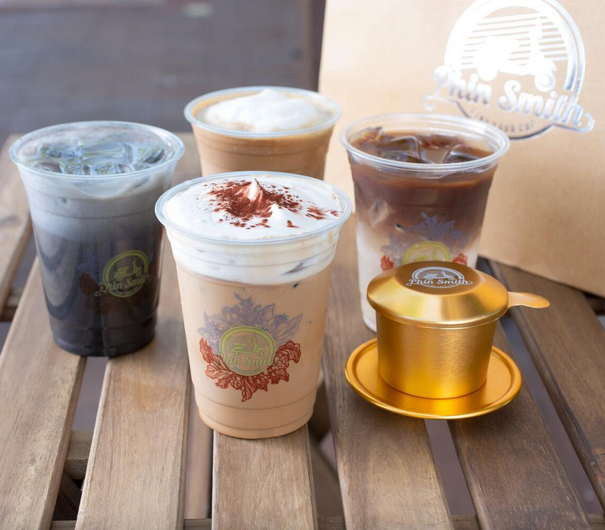

Phin Smith
Technically, there is only one SoCal Phin Smith location, which is right in the heart of Garden Grove's Main Street. However, the Las Vegas location just opened last year in 2023! With almost 2000 Yelp reviews and a rating of 4.7, Phin Smith is a popular spot amongst Orange County residents! Their specialty is their unique Phin drip-style Vietnamese coffee, producing a rich and creamy taste with hints of hazelnut, embodying the traditional "Cafe Sua Da" flavor perfectly.
Here are some other popular/signature drinks served at Phin Smith:
- Matcha Latte
- Coconut Coffee
- Javacado
- Banana Coffee
- Peanut Butter Coffee
You can find their menu on their website here
